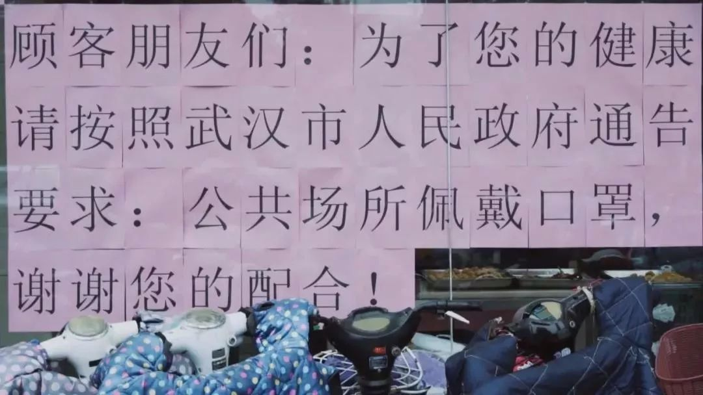
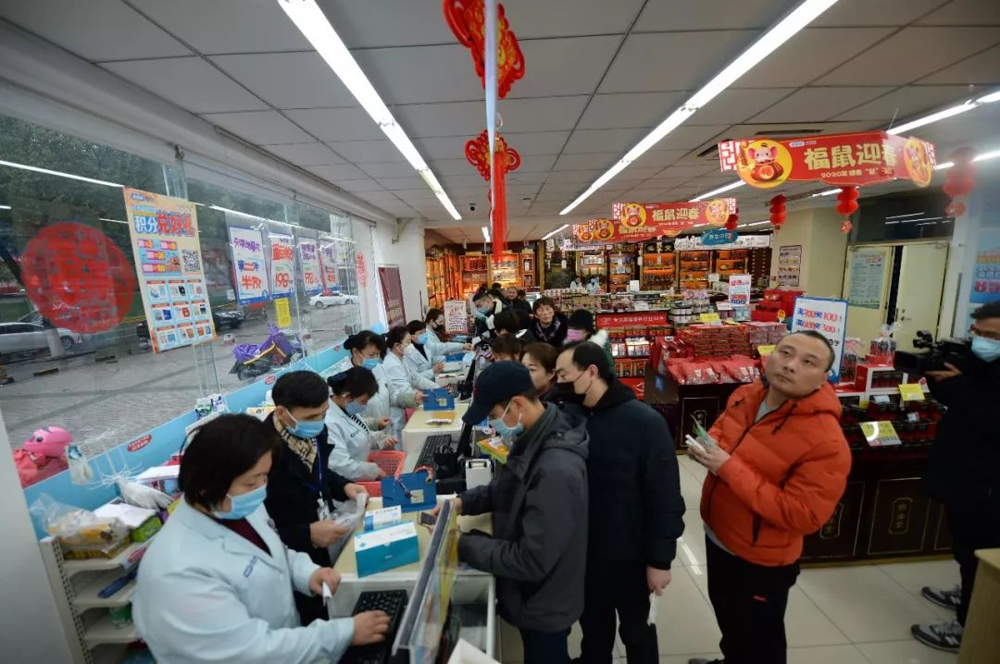

地球青年丨武汉的除夕夜，我一个人在家自行观察
原文链接 备份链接 以下文章来源于地球青年图鉴 ，作者地青 “此刻的中国版图中，武汉好像是一座孤城，但实际上在这座孤城之内还有无数个孤城，有成千上万个原驻家庭把自己锁在家里，他们表面上安静祥和，心头却有一根线紧绷着。”受访者张恒写道。 …
我有点后悔离开武汉了。自从回到乡下，武汉的肺炎疫情很是让人揪心，过年也变得寡然无味，大家都心神不宁的。早知如此，还不如就留在武汉过年，还安心一些。
封城那天，网络上不断有人炫耀“逃离”武汉，我就觉得好笑。疫情面前，有人想离开，有人想留下来；有人在当键盘侠，有人在默默尽一分力。人生百态，倒也正常。
昨晚和武汉一个拍纪录片的朋友电话上聊了一下，他说他也很想回去。我们有很多共同话题，确切地说在记录社会、理解社会的复杂性上，有很多共同语言。武汉封了，我们很想知道个中情形，却进不去，我们都只能干着急。

1月23日，在武汉宏祥路生鲜市场，市民佩戴口罩有序在市场、超市等地购买生活物资
回家过年是惯例，和疫情倒是没什么关系。我和妻子是1月20号（腊月二十六）晚上坐上火车回她湖南老家过年的。我们进武昌站，没有任何检测措施；候车大厅里，目测戴口罩的旅客也不到20%。
火车上，我和妻子还讨论这次疫情，说武汉人真是淡定，连口罩都不带；但我们也觉得算是正常，只要没有人传人，问题就不大。
没想到，第二天一早回到家，钟南山接受采访，确认有人传人的消息铺天盖地传播开来。武汉的形势也迅疾紧张起来，且步步升级，全国各地的防疫措施也渐次开展。

这次河南的“硬核”防疫，因为开展得早，且措施得力，受到了舆论的一致好评。但全国绝大多数地方，防疫工作是陆续开展的。
回来的第二天（1月21号）上午，福建老家的村干部就联系我，问我回家没，看来排查工作已经开展了。但在湖南妻子老家，1月23号晚上，村干部才上门排查登记。
村干部不知是不是为了不得罪我们，说是为了应付一下上级的任务，也没提醒说少出门之类的。
岳父岳母早我们几天回乡，哪怕在我们回来后的几天，他们还忙于走亲戚，置办年货，群众并没有紧张感。我接到福建老家的信息后还感叹，怎么湖南还不赶紧防疫啊。
我和妻子也提醒岳父母，还是少出门，自我隔离的好——倒也不是担心我们自己，而是怕我们自己不自觉，反倒让别人不好办。
按照年前的约定，大年三十，姑姑、叔叔们都和我们一起过年。腊月29，妻子交代岳父母，还是和亲戚说清楚，要是有忌讳，就不一起过年了。
从岳父母的角度说，怎么传达我们一家的意思，很是微妙。
他们当然不好直接说大家不要来了，否则就是拒人于千里之外了；但也不能不表达我们的意思，毕竟我们是武汉回来的。第二天，大家还是聚在一起过年了。
想来，这些都是至亲，即便心里有点忌讳，怕也不会主动取消家庭聚会。他们心里的微妙之处，估计和我们差不多。尽在不言中吧，一家人，不见外。
本来年初一是到两个舅舅家聚会的，在我们的建议下，大年三十晚上，岳母还是打了电话给舅舅，说聚会就取消吧，等过段时间再说。
意外却也算预料之中的是，大年初一，市政府发了关闭公共场所，要求人们不聚会、少出门的通知，且通报全市已出现3例患者。
乡下气氛一下紧张起来了。本来，大年初一会有不少舞龙灯的，结果一个也没有了，街上店铺也全关门了。当然，往日热闹非凡的麻将馆也关门大吉了。

1月23日，在湖南长沙一家老百姓大药房内，市民排队购买口罩
岳父母家住在街上，街坊邻居都是熟人。下午，岳父母因有事上街，结果旁人看到他们都低着头，躲得远远的。
晚饭时分，听岳父母细声说起这个事，我可以感受到他们的复杂心情。我心里也五味杂陈，有点想掉眼泪。他们常年在武汉帮我们带小孩，也就过年的时候能回来和街坊邻居、亲戚朋友说一说话，聚一聚。
岳父很好面子，我们一直是他在家乡的骄傲；今年女儿上学后，他还在我的单位做后勤工作，自我感觉也不错。
这次，岳父岳母回乡前准备了一段时间，收拾好了心情，准备舒舒服服过个年的。没成想，突如其来的疫情，一切都化作泡影了。我只能安慰他们，要理解大家，我们自觉一点就好。

只是，这种微妙的被排斥感，随着时间的推移越来越强烈。年初二一大早，女儿说想吃豆沙包。其实超市就在我们家隔壁，但岳父岳母硬是不敢出门。
电话打了半天，竟也找不到合适的人帮忙买或送货上门。平常，岳父岳母对孙女甚是疼爱，尤其是在吃饭方面，变着花样做，想吃什么都尽量满足。未曾想，就这么一个简单的豆沙包，他们也满足不了了。我感觉，他们受到的心理触动，应该不亚于前一天上街时的感受。
吃过早饭不久，岳母接到一个熟人的电话，问我们一家是不是到医院去检查了。岳母说，村里有了针对我们一家的谣言了。看来，我们一家在乡亲们的眼中，怕是和瘟神差不多了。
我和妻子都不敢细问，也不太好再做解释。只能说，这个时候我们得理解大家，毕竟大家不了解我们的情况。只不过，这种心理暗示怕是在外形中影响了岳父母的行为。
中午的饭菜是岳母准备的，平常极其注意的她，竟然忽视了女儿不能吃辣，我也不怎么吃辣的情况。结果，我加炒了一盘胡萝卜炒肉。
饭后，岳母问岳父，还有没有新鲜排骨？岳父回答，还有的。妻子说，一直吃青菜都不要紧。他们说这些话时很自然，但我在一旁听着，却有点恍然。
看来，大家都隐约在担心起日常生活来了。家里储备的腊肉是够过年的，菜园子里的菜也比较充足，这是岳父和妻子有底气的地方。但我和女儿喜欢吃新鲜菜，鲜肉怕是不够了，这应该是岳母担心的地方。
其实，中午炒菜时，我脑子还跳出一个问题，要是液化气没了怎么办？米不够了又怎么办？当然，我都没说出来。按照岳父岳母的做事风格，这在年前应该都是储备充足了的，我没必要担心的。
这几天在家隔离，我和妻子倒是还好，但岳父岳母的感受怕是不好。
岳母陪孙女，只是因为隔离，这也不是一个好差事。家里所有东西都玩遍了，小孩也不耐烦了，昨天下午我们只能妥协，让她看动画片。一向好交往、爱面子的岳父，只能在楼上楼下走着，这里弄弄，那里看看，自我隔离，免得被乡亲们讨嫌。
岳父岳母俨然成了当地社会的边缘人。这种体验，我可以感同身受，却未必能够真正理解其内心的震动。
岳父岳母的这种体验，怕是很多从湖北，尤其是武汉出来的人共同的心理感受。

1月22日，汉口火车站，医护人员对进站旅客的体温进行检测
我一位同学，也是大学教授，和我差不多时间离开武汉。回到家乡后，很快就被登记排查了。并且，按当地街道和社区管理部门的要求，自觉隔离，每天测体温。
但就在大年三十的那一天，其姓名、身份证号和详细居住地址等都被泄露了，他家居住的小区和周边几个小区的业主群，天天都在疯狂传播其信息。传播着就变成了谣言，说他是感染者。有几位邻居甚至上门劝说他家不要住在小区里。
他就是当地人，父母长期居住其中，大家平时都是低头不见抬头见的熟人关系，他本人和其父母所受到的压力，可想而知。
还有一位同学，同样是大学老师，仅仅是因为年底时来武汉开过一次会，其家人就甚是紧张，反复交代千万别说去过武汉，否则村民不知道会怎么看他们一家。
这几天，网络上不断传播各种“硬核”防控措施，最为普遍的是封村堵路。人民群众的力量发动起来，当然是个好事，也是我们这个体制优越性的表现。只是，如今是一个大流动的社会，发动群众的社会基础也发生了改变。一个从异乡回来的本乡人，突然之间成了故乡的敌人，不知是幸事还是祸事？
一直以来，我们一家的身份认同其实是很清晰的。我是福建客家人，虽然在武汉生活了15年时间，却始终觉得自己是个异乡人。妻子老家在湖南，在武汉逛街时，经常说某个路人讲的是家乡话，她当然也自我认同是湘人。
前些年女儿出生时，在武汉上的户口。我一直希望她是个福建人，但似乎有点不现实。因为是外公外婆帮忙带的，一口湖南话。但要说她是个湖南人，却也名不正言不顺，毕竟是随我的姓。
妻子就说，她就是武汉人。但我打心眼里不认可这个判断。我和妻子都把武汉当作异乡，总不能让女儿把他乡作故乡吧？
而今，突然觉得自己就是武汉人。武汉当地媒体有一句话，很是让我感动。“我们的城，我们来守”。我们已经和武汉无法隔离，哪怕身体不在场，内心却一直在场。

作者 | 武汉大学中国乡村治理研究中心研究员 吕德文
排版 | GINNY
南风窗新媒体出品
原文链接 备份链接 以下文章来源于地球青年图鉴 ，作者地青 “此刻的中国版图中，武汉好像是一座孤城，但实际上在这座孤城之内还有无数个孤城，有成千上万个原驻家庭把自己锁在家里，他们表面上安静祥和，心头却有一根线紧绷着。”受访者张恒写道。 …
原文链接 备份链接 桐柏县中心医院 作者供图 作者李强 这次肺炎疫情爆发后，我在老家陆续出现了一些这场疫情中经常被提及的症状。 我的老家是河南省南阳市桐柏县，离武汉仅200多公里。2020年1月23日，农历猪年腊月二十九，我开始干咳、 …
原文链接 备份链接 出武汉 入围城丨记者手记 2020-01-25 08:12 作者：王迎春 来源：中国经营网 本报记者 王迎春 武汉报道 除夕的武汉，耳畔热烈的鞭炮声、门楣新贴的大红春联亦不能赶走紧张氛围。 朋友圈再难看到红包雨，恭喜发 …
原文链接 备份链接 二月二，龙抬头。春耕应该从今天开始吧？但不知道，今年此日，地里有没有劳作的农人。继续晴天，很暖和，有一种大太阳能把病毒晒死的感觉。院里月季都在抽枝发芽，我几乎没有怎么打理它们，但它们依然旺盛生长。 平时经常吃仟吉系列 …
原文链接 备份链接 二月二，龙抬头。春耕应该从今天开始吧？但不知道，今年此日，地里有没有劳作的农人。继续晴天，很暖和，有一种大太阳能把病毒晒死的感觉。院里月季都在抽枝发芽，我几乎没有怎么打理它们，但它们依然旺盛生长。 平时经常吃仟吉系列 …